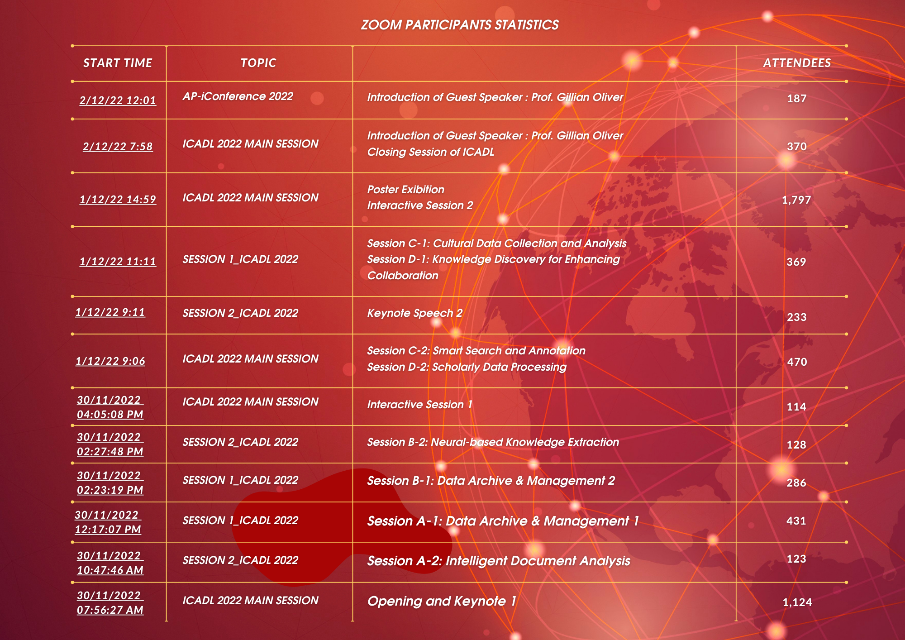

<!-- Top Bar Start -->

  <div class="modal fade" id="modalZoom" tabindex="-1" role="dialog" aria-labelledby="modalIntroTitle" aria-hidden="true" style="display: none;">
    <div class="modal-zoom text-center" >
      <div class="content">
        <div class="text-right">
          <button type="button" class="but-close" onclick="backClick(modalZoom)" aria-label="Close" data-dismiss="modal"> 
             <span aria-hidden="true">
            
          </span></button>
        </div>
        <div class="modal-body">
          
            <div class="menu" id="menu">
              
                
             
          </div>
          
          
      </div>
      
    </div>
  </div>
  </div>
  <style>
   
    @media (min-width: 1024px){
        .modal-zoom {
        width: 1000px !important;
        margin: 1.75rem auto;
    }
    
    
    }
    @media (max-width: 500px){
        .modal-zoom-medium {
        width: 700px !important;
        margin: 1.75rem auto;
    }
    }
    .content{
      pointer-events: auto;
    }
    .but-close{
      border: none;
      background: none;
    }
    
  </style>
  <script>
  </script>